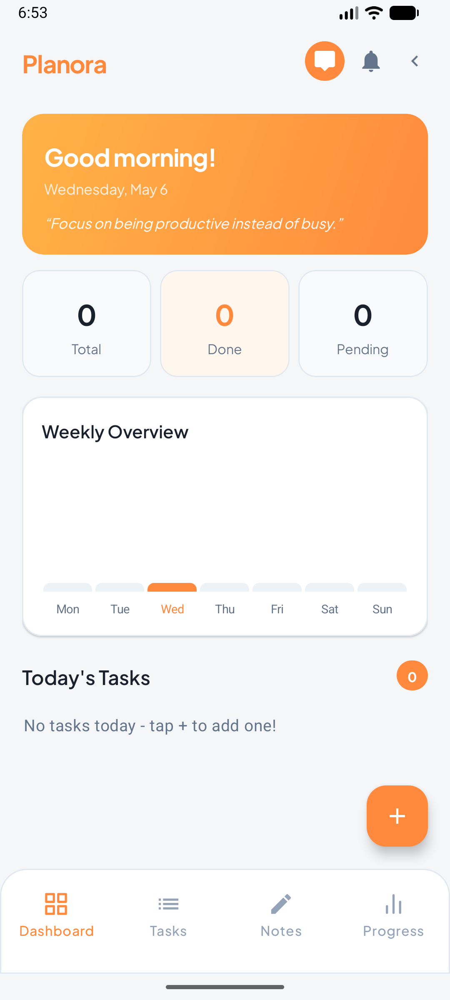
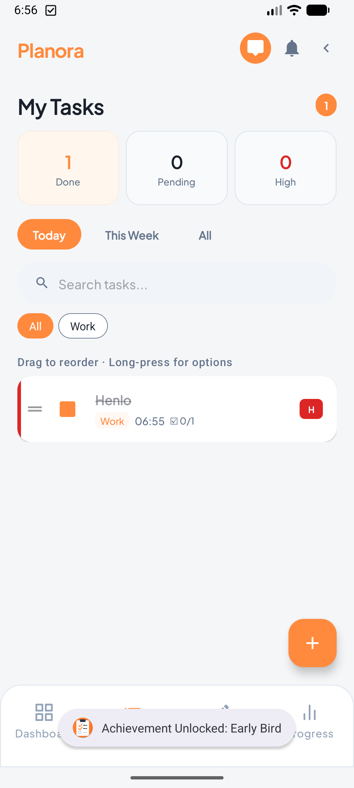
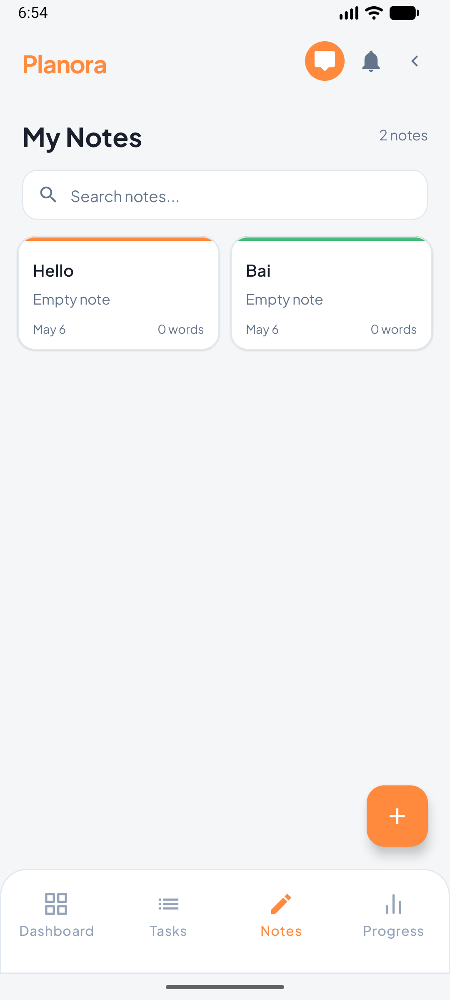
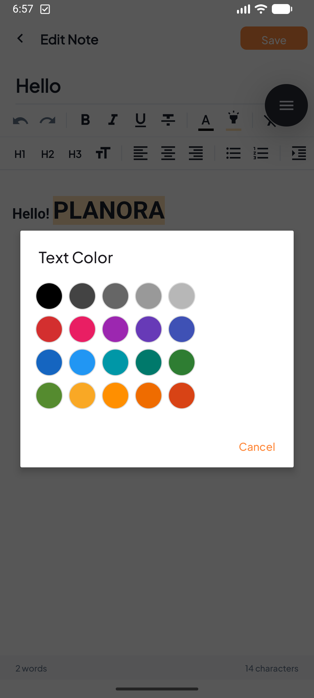
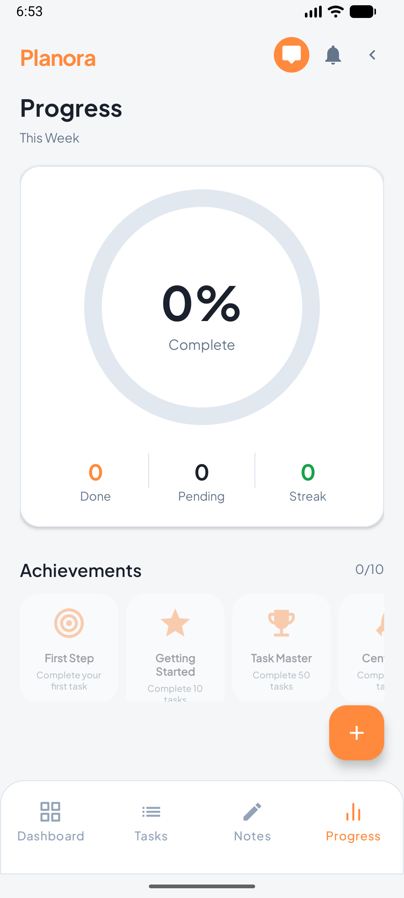
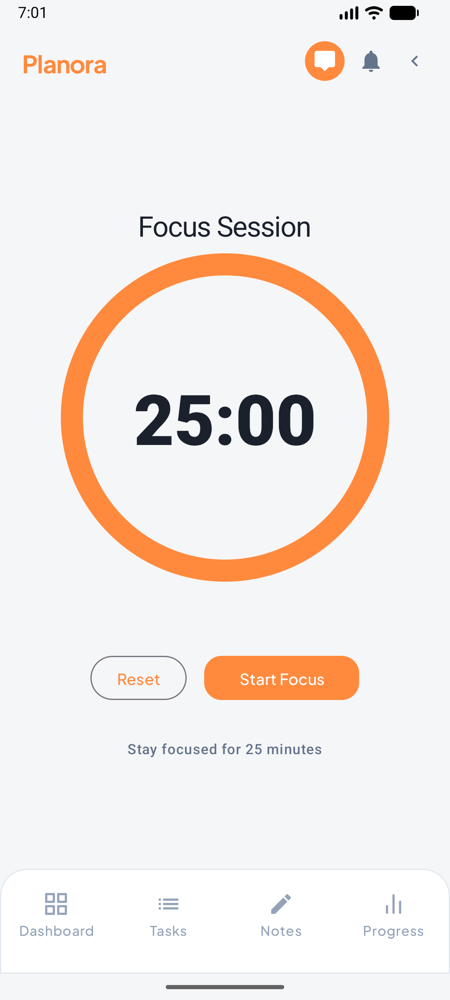
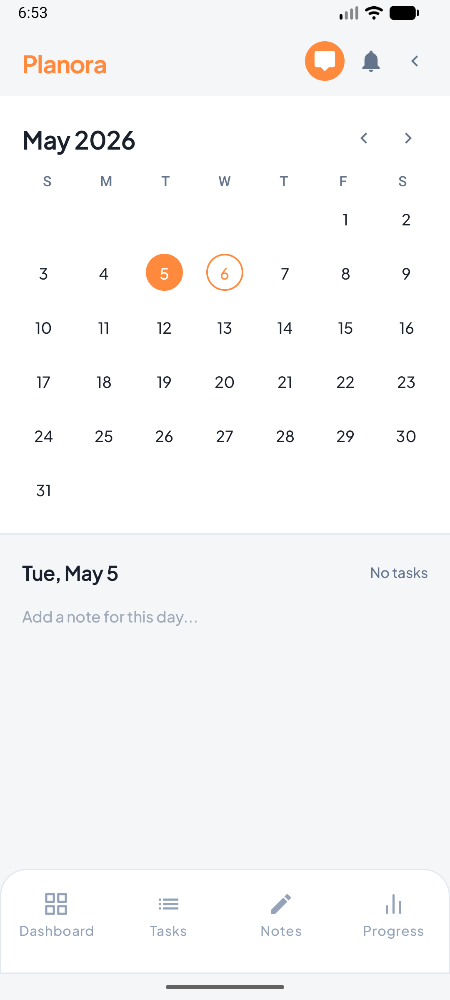
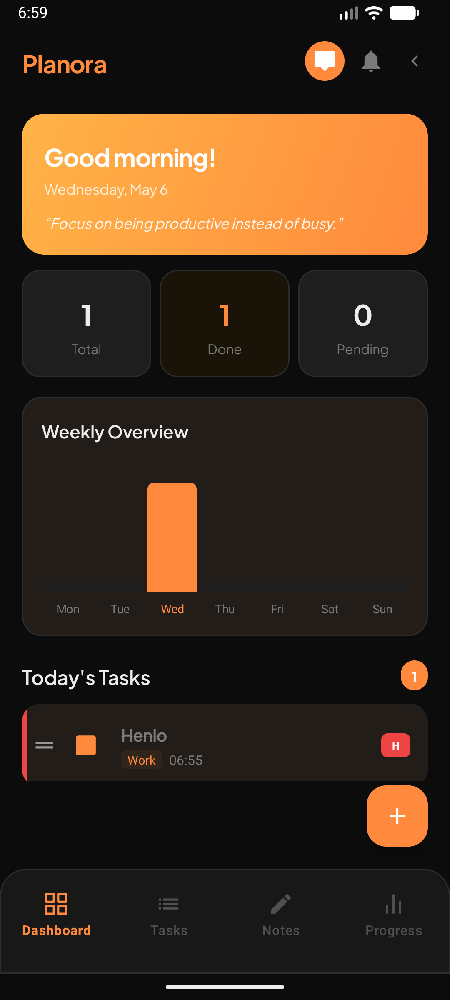

A task manager that stays out of your way
Tasks, notes, and a focus timer in one app. No accounts, no ads, no internet required. Works the moment you open it.
"Done is better than perfect."
Add tasks with high, medium, or low priority. See what matters at a glance with colored accent bars and badges.
Set reminders that actually show up on your lock screen. See live countdowns like "Due in 2d 5h" so nothing slips.
Weekly charts, completion rates, and streaks. Watch your consistency grow and unlock achievement badges.
See your month at a glance. Dots show which days have tasks. Tap any day to see what's planned.
Quick notes with rich text, color labels, and pin-to-top. Search across everything instantly.
Full Pomodoro cycle with automatic break timers. Pick a task, focus for 25 minutes, then take a 5-minute break. Every 4th session earns a 15-minute long break.
Type what you need to do, pick a date and priority, and you're set. Natural language input lets you type things like "Submit report tomorrow at 3pm" and it just works.
Your dashboard shows today's tasks sorted by priority. Check them off as you go. The progress bar fills up. Reminders nudge you before deadlines hit.
Weekly charts and completion streaks show you're improving. Unlock badges for milestones. End your day with a quick reflection on how it went.
Ask Nora to create tasks, check your schedule, or plan your day. Runs offline, no server needed.
Say "add meeting tomorrow at 3pm" and Nora creates the task with the right date, time, and priority.
Nora knows what screen you're on and what you last talked about. Follow-ups like "mark it done" just work.
Just say "add a task" and Nora walks you through title, date, and priority step by step.
Nora sends periodic reminders during the day. Quiet hours built in, fully configurable.
Tasks are now fully editable from the detail sheet. The focus timer gains a proper Pomodoro break cycle with session history. Calendar and task management get powerful new capabilities.
Every screen in Planora has been redesigned from the ground up. New animations, polished cards, and a cohesive visual identity across the entire app.
Drag your tasks into order, manage subtasks, back up your data, and welcome new users with a guided onboarding flow.
Nora now understands virtually everything you throw at her, plus new task management features across the board.
Reliable reminders that survive app kills and reboots, plus ways to make Nora feel like your own assistant.
The Nora chat experience gets a major upgrade with voice input, quick replies, and smarter context awareness.
Planora now has a built-in AI assistant named Nora. Tap the chat bubble on your dashboard to start a conversation.
A round of fixes to make everything smoother.
Major feature drop with personal notes, achievement badges, and the Pomodoro focus timer.
Planora goes live. Tasks, priorities, deadlines, calendar view, progress tracking, and dark mode — all in under 5MB.
Filter by Today, This Week, or All. Search across tasks. Each one shows its priority, time, and how long until it's due. Long-press for details, subtasks, and focus mode.
A circular progress ring shows your overall completion rate. Below it, see breakdowns by day, your current streak, and achievement badges you've unlocked.
The Pomodoro focus timer helps you commit to 25 minutes of uninterrupted work on a single task. Complete a session to unlock the "Deep Focus" badge.
Screenshots from Planora v3.0.0 — light and dark mode.








Same app, runs in your browser. No install needed.
Android only for now. Your data stays on your device — nothing leaves your phone.